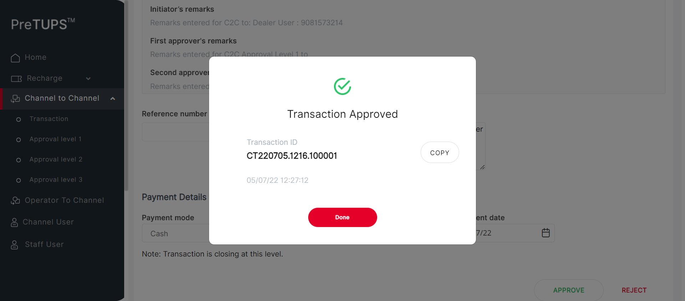
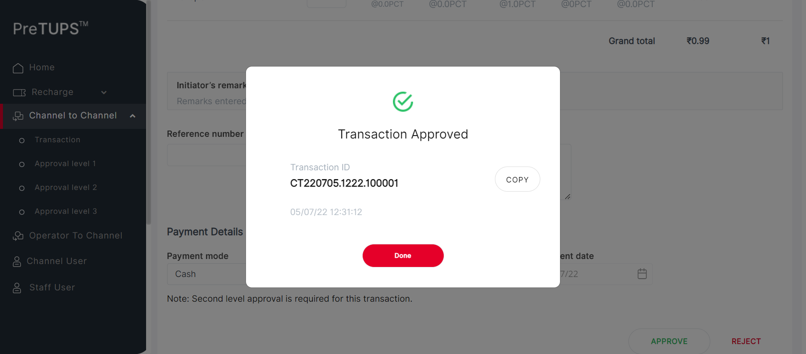
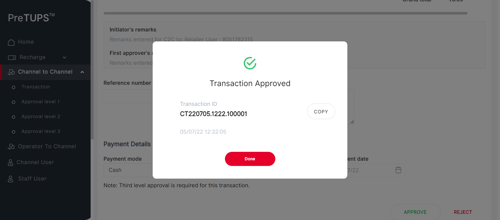
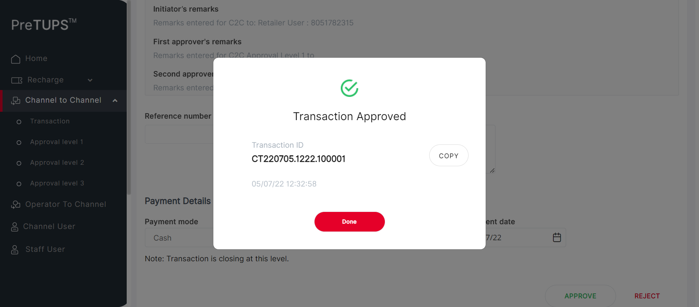

| Status | Timestamp | Details |
|---|---|---|
| info_outline | 12:23:46 PM | Entered getPreference(SE, NG, MAX_APPROVAL_LEVEL_C2C_TRANSFER) |
| info_outline | 12:23:46 PM | Service Class Preference Not Found |
| info_outline | 12:23:46 PM | Trying to get Preference value from Control Preferences |
| info_outline | 12:23:46 PM | Query Repository Returns: DEFAULT_VALUE (3) |
| info_outline | 12:23:46 PM | Category Code for Super Distributor: DIST |
| info_outline | 12:23:46 PM | Entered webInterface(Super Distributor) |
| info_outline | 12:23:46 PM | webInterface() :: select query: Select WEB_INTERFACE_ALLOWED from categories where category_name= ? |
| info_outline | 12:23:46 PM | Database Returns: WEB_INTERFACE_ALLOWED (Y) |
| info_outline | 12:23:46 PM | Exited webInterface() |
| info_outline | 12:23:46 PM | Entered performC2CTransferMobileBuyerType(Super Distributor, Dealer, 9081573214, 2468) |
| info_outline | 12:23:46 PM | Login ID Found as: suser |
| info_outline | 12:23:46 PM | Password Found as: Com@2469 |
| info_outline | 12:23:46 PM | LOGINID : suser |
| info_outline | 12:23:46 PM | LoginID found as: suser |
| info_outline | 12:23:46 PM | Password found as: Com@2469 |
| info_outline | 12:23:46 PM | Username found as: suser |
| info_outline | 12:23:47 PM | Trying to select Language |
| info_outline | 12:23:57 PM | Trying to enter Login ID |
| info_outline | 12:23:58 PM | Login ID entered successfully as: suser |
| info_outline | 12:23:58 PM | Trying to enter Password |
| info_outline | 12:23:58 PM | Password entered successfully as: Com@2469 |
| info_outline | 12:23:58 PM | Trying to click Login Button |
| info_outline | 12:23:58 PM | Login button clicked successfully |
| info_outline | 12:23:58 PM | Error Message Found on Login Screen: |
| info_outline | 12:24:08 PM | Trying clicking on C2C Heading |
| info_outline | 12:24:08 PM | User clicked C2C Heading Link. |
| info_outline | 12:24:08 PM | Trying clicking on C2C Transaction Heading |
| info_outline | 12:24:08 PM | User clicked C2C Transaction Heading Link. |
| info_outline | 12:24:08 PM | C2C Heading and Transaction Heading is clicked |
| info_outline | 12:24:08 PM | Trying clicking on C2C Single Operation Heading |
| info_outline | 12:24:10 PM | User clicked C2C Single Operation Heading. |
| info_outline | 12:24:10 PM | Trying clicking on C2C Transfer Heading |
| info_outline | 12:24:10 PM | User clicked C2C Transfer Heading. |
| info_outline | 12:24:10 PM | Trying clicking on Etopup |
| info_outline | 12:24:10 PM | Clicked Etopup. |
| info_outline | 12:24:10 PM | Trying to select C2C Buyer Type |
| info_outline | 12:24:10 PM | C2C Buyer Type selected : //ng-select[@id='searchBy']//ng-dropdown-panel[contains(@class,'ng-star-inserted')]//span[text()='Mobile Number'] |
| info_outline | 12:24:10 PM | Entering C2C MSISDN |
| info_outline | 12:24:10 PM | Entered C2C MSISDN : 9081573214 |
| info_outline | 12:24:20 PM | Trying clicking on PROCEED button on C2C |
| info_outline | 12:24:22 PM | Clicked PROCEED button on C2C. |
| info_outline | 12:24:22 PM | Trying to initiate C2C Topups |
| info_outline | 12:24:23 PM | rowCount of c2c topups available on screen : 2 |
| info_outline | 12:24:23 PM | sheetProductCode : eTopUP |
| info_outline | 12:24:23 PM | sheetProductCode : PeTopUP |
| info_outline | 12:24:23 PM | quantity : 2 |
| info_outline | 12:24:23 PM | String.valueOf(quantity) SEND KEYS : 2 |
| info_outline | 12:24:23 PM | rowCount of c2c topups available on screen : 2 |
| info_outline | 12:24:23 PM | sheetProductCode : eTopUP |
| info_outline | 12:24:23 PM | quantity : 1 |
| info_outline | 12:24:23 PM | String.valueOf(quantity) SEND KEYS : 1 |
| info_outline | 12:24:23 PM | sheetProductCode : PeTopUP |
| info_outline | 12:24:23 PM | Entered Quantities: |
| info_outline | 12:24:23 PM | Entered Reference Number |
| info_outline | 12:24:23 PM | User entered Remarks |
| info_outline | 12:24:23 PM | Trying to select Payment mode : Cash |
| info_outline | 12:24:26 PM | Selected Payment Mode : Cash |
| info_outline | 12:24:26 PM | Trying to select Payment Instrument Number |
| info_outline | 12:24:26 PM | User entered PaymentInstNum: 124231 |
| info_outline | 12:24:26 PM | Trying to select Date |
| info_outline | 12:24:26 PM | Trying to enter Payment Instrument Date |
| info_outline | 12:24:27 PM | User entered PaymentInstDate: 05/07/22 |
| info_outline | 12:24:27 PM | Trying clicking on C2C TRANSFER button |
| info_outline | 12:24:27 PM | Clicked C2C Transfer Button |
| info_outline | 12:24:28 PM | PIN PopUP is visible. |
| info_outline | 12:24:28 PM | Trying to Enter Channel User PIN for C2C |
| info_outline | 12:24:28 PM | User entered PIN: 2468 |
| info_outline | 12:24:28 PM | Trying clicking on C2C TRANSFER button |
| info_outline | 12:24:29 PM | Clicked C2C Transfer Button |
| info_outline | 12:24:30 PM | PIN PopUP is visible. |
| info_outline | 12:24:30 PM | Fetching C2C Transfer Request Initiated Message |
| info_outline | 12:24:30 PM | C2C Transfer Request Initiated Message : Transfer Request Initiated |
| info_outline | 12:24:30 PM | Trying to get C2C Topups Done |
| info_outline | 12:24:30 PM | C2C [[ChromeDriver: chrome on WINDOWS (1d7164c70322ed26070b2811d4cabaf9)] -> xpath: (//label[@class='labelposPrd'])[1]] : [[ChromeDriver: chrome on WINDOWS (1d7164c70322ed26070b2811d4cabaf9)] -> xpath: (//label[@class='labelposPrd'])[1]/following-sibling::label] |
| info_outline | 12:24:30 PM | C2C [[ChromeDriver: chrome on WINDOWS (1d7164c70322ed26070b2811d4cabaf9)] -> xpath: (//label[@class='labelposPrd'])[2]] : [[ChromeDriver: chrome on WINDOWS (1d7164c70322ed26070b2811d4cabaf9)] -> xpath: (//label[@class='labelposPrd'])[2]/following-sibling::label] |
| info_outline | 12:24:30 PM | C2C TOPUPS Done and Info Printed Above |
| info_outline | 12:24:30 PM | C2C Transfer Initiated : Transfer Request Initiated |
| info_outline | 12:24:30 PM | Fetching C2C Transfer Transaction ID |
| info_outline | 12:24:30 PM | C2C Transfer Transaction ID : CT220705.1216.100001 |
| error | 12:24:51 PM | Error while getting SSH Server Instance : com.jcraft.jsch.JSchException: java.net.ConnectException: Connection timed out: connect |
| check_circle | 12:24:51 PM | Catalina Log |
| info_outline | 12:24:51 PM | Trying to Click DONE button after C2C Transfer initiated |
| info_outline | 12:24:51 PM | Clicked Done for Initiated C2C |
| info_outline | 12:24:51 PM | Exited performC2CTransferMobileBuyerType() |
| info_outline | 12:24:51 PM | Entered performC2CTransferMobileBuyerType(Super Distributor, Dealer, 9081573214, 2468) |
| info_outline | 12:24:51 PM | Login ID Found as: suser |
| info_outline | 12:24:51 PM | Password Found as: Com@2469 |
| info_outline | 12:24:51 PM | LOGINID : suser |
| info_outline | 12:24:51 PM | LoginID found as: suser |
| info_outline | 12:24:51 PM | Password found as: Com@2469 |
| info_outline | 12:24:51 PM | Username found as: suser |
| info_outline | 12:24:51 PM | Trying to select Language |
| info_outline | 12:25:02 PM | Trying to enter Login ID |
| info_outline | 12:25:02 PM | Login ID entered successfully as: suser |
| info_outline | 12:25:02 PM | Trying to enter Password |
| info_outline | 12:25:02 PM | Password entered successfully as: Com@2469 |
| info_outline | 12:25:02 PM | Trying to click Login Button |
| info_outline | 12:25:02 PM | Login button clicked successfully |
| info_outline | 12:25:02 PM | Error Message Found on Login Screen: |
| info_outline | 12:25:11 PM | Trying clicking on C2C Heading |
| info_outline | 12:25:11 PM | User clicked C2C Heading Link. |
| info_outline | 12:25:11 PM | Trying clicking on C2C Approval Level 1 Heading |
| info_outline | 12:25:12 PM | User clicked C2C Approval Level 1 Heading Link. |
| info_outline | 12:25:12 PM | C2C Heading and Transaction Heading is clicked |
| info_outline | 12:25:12 PM | Waiting for spinner |
| info_outline | 12:25:13 PM | Waiting for spinner to stop |
| info_outline | 12:25:15 PM | Spinner stopped |
| info_outline | 12:25:15 PM | Trying clicking on C2C Single Operation Heading |
| info_outline | 12:25:15 PM | User clicked C2C Single Operation Heading. |
| info_outline | 12:25:15 PM | Trying clicking on etopUp Heading |
| info_outline | 12:25:15 PM | User clicked eTopup Heading Link. |
| info_outline | 12:25:15 PM | Trying to enter the TransactionId |
| info_outline | 12:25:16 PM | Entered the TransactionId |
| info_outline | 12:25:16 PM | Trying to Click the approve button |
| info_outline | 12:25:16 PM | User clicked Approve Button . |
| info_outline | 12:25:16 PM | Trying to enter the remarks |
| info_outline | 12:25:16 PM | Entered the TransactionId |
| info_outline | 12:25:18 PM | Trying to Click the approve button |
| info_outline | 12:25:18 PM | User clicked Approve Button . |
| info_outline | 12:25:19 PM | Trying to Click the yes button |
| info_outline | 12:25:24 PM | User clicked Yes Button. |
| info_outline | 12:25:25 PM | PopUP is visible. |
| info_outline | 12:25:25 PM | Trying to get the Success Msg |
| info_outline | 12:25:25 PM | Successfully Retrieved Success Msg |
| info_outline | 12:25:25 PM | Expected: Transaction Approved |
| info_outline | 12:25:25 PM | Message Validation Success |
| info_outline | 12:25:26 PM | |
| info_outline | 12:25:26 PM | Transaction Approved : Transaction Approved |
| info_outline | 12:25:26 PM | Trying to get the TxndID |
| info_outline | 12:25:26 PM | Successfully retrieved TxnId |
| error | 12:25:47 PM | Error while getting SSH Server Instance : com.jcraft.jsch.JSchException: java.net.ConnectException: Connection timed out: connect |
| check_circle | 12:25:47 PM | Catalina Log |
| info_outline | 12:25:47 PM | Trying to click Done Button |
| info_outline | 12:25:47 PM | Done Button successfully clicked |
| info_outline | 12:25:47 PM | Entered performC2CTransferMobileBuyerType(Super Distributor, Dealer, 9081573214, 2468) |
| info_outline | 12:25:47 PM | Login ID Found as: suser |
| info_outline | 12:25:47 PM | Password Found as: Com@2469 |
| info_outline | 12:25:47 PM | LOGINID : suser |
| info_outline | 12:25:47 PM | LoginID found as: suser |
| info_outline | 12:25:47 PM | Password found as: Com@2469 |
| info_outline | 12:25:47 PM | Username found as: suser |
| info_outline | 12:25:47 PM | Trying to select Language |
| info_outline | 12:25:58 PM | Trying to enter Login ID |
| info_outline | 12:25:58 PM | Login ID entered successfully as: suser |
| info_outline | 12:25:58 PM | Trying to enter Password |
| info_outline | 12:25:58 PM | Password entered successfully as: Com@2469 |
| info_outline | 12:25:58 PM | Trying to click Login Button |
| info_outline | 12:25:58 PM | Login button clicked successfully |
| info_outline | 12:25:58 PM | Error Message Found on Login Screen: |
| info_outline | 12:26:09 PM | Trying clicking on C2C Heading |
| info_outline | 12:26:09 PM | User clicked C2C Heading Link. |
| info_outline | 12:26:09 PM | Trying clicking on C2C Approval Level 2 Heading |
| info_outline | 12:26:09 PM | User clicked C2C Approval Level 2 Heading Link. |
| info_outline | 12:26:09 PM | C2C Heading and Transaction Heading is clicked |
| info_outline | 12:26:09 PM | Waiting for spinner |
| info_outline | 12:26:09 PM | Waiting for spinner to stop |
| info_outline | 12:26:11 PM | Spinner stopped |
| info_outline | 12:26:11 PM | Trying clicking on C2C Single Operation Heading |
| info_outline | 12:26:11 PM | User clicked C2C Single Operation Heading. |
| info_outline | 12:26:11 PM | Trying clicking on etopUp Heading |
| info_outline | 12:26:11 PM | User clicked eTopup Heading Link. |
| info_outline | 12:26:11 PM | Trying to enter the TransactionId |
| info_outline | 12:26:11 PM | Entered the TransactionId |
| info_outline | 12:26:11 PM | Trying to Click the approve button |
| info_outline | 12:26:12 PM | User clicked Approve Button . |
| info_outline | 12:26:12 PM | Trying to enter the remarks |
| info_outline | 12:26:12 PM | Entered the TransactionId |
| info_outline | 12:26:13 PM | Trying to Click the approve button |
| info_outline | 12:26:13 PM | User clicked Approve Button . |
| info_outline | 12:26:14 PM | Trying to Click the yes button |
| info_outline | 12:26:19 PM | User clicked Yes Button. |
| info_outline | 12:26:20 PM | PopUP is visible. |
| info_outline | 12:26:20 PM | Trying to get the Success Msg |
| info_outline | 12:26:20 PM | Successfully Retrieved Success Msg |
| info_outline | 12:26:20 PM | Expected: Transaction Approved |
| info_outline | 12:26:20 PM | Message Validation Success |
| info_outline | 12:26:20 PM | |
| info_outline | 12:26:20 PM | Transaction Approved : Transaction Approved |
| info_outline | 12:26:20 PM | Trying to get the TxndID |
| info_outline | 12:26:20 PM | Successfully retrieved TxnId |
| error | 12:26:41 PM | Error while getting SSH Server Instance : com.jcraft.jsch.JSchException: java.net.ConnectException: Connection timed out: connect |
| check_circle | 12:26:41 PM | Catalina Log |
| info_outline | 12:26:41 PM | Trying to click Done Button |
| info_outline | 12:26:41 PM | Done Button successfully clicked |
| info_outline | 12:26:41 PM | Entered performC2CTransferMobileBuyerType(Super Distributor, Dealer, 9081573214, 2468) |
| info_outline | 12:26:41 PM | Login ID Found as: suser |
| info_outline | 12:26:41 PM | Password Found as: Com@2469 |
| info_outline | 12:26:41 PM | LOGINID : suser |
| info_outline | 12:26:41 PM | LoginID found as: suser |
| info_outline | 12:26:41 PM | Password found as: Com@2469 |
| info_outline | 12:26:41 PM | Username found as: suser |
| info_outline | 12:26:42 PM | Trying to select Language |
| info_outline | 12:26:52 PM | Trying to enter Login ID |
| info_outline | 12:26:52 PM | Login ID entered successfully as: suser |
| info_outline | 12:26:52 PM | Trying to enter Password |
| info_outline | 12:26:52 PM | Password entered successfully as: Com@2469 |
| info_outline | 12:26:52 PM | Trying to click Login Button |
| info_outline | 12:26:53 PM | Login button clicked successfully |
| info_outline | 12:26:53 PM | Error Message Found on Login Screen: |
| info_outline | 12:27:02 PM | Trying clicking on C2C Heading |
| info_outline | 12:27:02 PM | User clicked C2C Heading Link. |
| info_outline | 12:27:02 PM | Trying clicking on C2C Approval Level 3 Heading |
| info_outline | 12:27:03 PM | User clicked C2C Approval Level 3 Heading Link. |
| info_outline | 12:27:03 PM | C2C Heading and Transaction Heading is clicked |
| info_outline | 12:27:03 PM | Waiting for spinner |
| info_outline | 12:27:03 PM | Waiting for spinner to stop |
| info_outline | 12:27:04 PM | Spinner stopped |
| info_outline | 12:27:04 PM | Trying clicking on C2C Single Operation Heading |
| info_outline | 12:27:04 PM | User clicked C2C Single Operation Heading. |
| info_outline | 12:27:04 PM | Trying clicking on etopUp Heading |
| info_outline | 12:27:04 PM | User clicked eTopup Heading Link. |
| info_outline | 12:27:04 PM | Trying to enter the TransactionId |
| info_outline | 12:27:04 PM | Entered the TransactionId |
| info_outline | 12:27:04 PM | Trying to Click the approve button |
| info_outline | 12:27:04 PM | User clicked Approve Button . |
| info_outline | 12:27:04 PM | Trying to enter the remarks |
| info_outline | 12:27:05 PM | Entered the TransactionId |
| info_outline | 12:27:06 PM | Trying to Click the approve button |
| info_outline | 12:27:06 PM | User clicked Approve Button . |
| info_outline | 12:27:07 PM | Trying to Click the yes button |
| info_outline | 12:27:12 PM | User clicked Yes Button. |
| info_outline | 12:27:13 PM | PopUP is visible. |
| info_outline | 12:27:13 PM | Trying to get the Success Msg |
| info_outline | 12:27:13 PM | Successfully Retrieved Success Msg |
| info_outline | 12:27:13 PM | Expected: Transaction Approved |
| info_outline | 12:27:13 PM | Message Validation Success |
| info_outline | 12:27:13 PM |  |
| info_outline | 12:27:13 PM | Transaction Approved : Transaction Approved |
| info_outline | 12:27:13 PM | Trying to get the TxndID |
| info_outline | 12:27:13 PM | Successfully retrieved TxnId |
| error | 12:27:34 PM | Error while getting SSH Server Instance : com.jcraft.jsch.JSchException: java.net.ConnectException: Connection timed out: connect |
| check_circle | 12:27:34 PM | Catalina Log |
| info_outline | 12:27:34 PM | Trying to click Done Button |
| info_outline | 12:27:34 PM | Done Button successfully clicked |
| Status | Timestamp | Details |
|---|---|---|
| info_outline | 12:27:35 PM | Entered getPreference(AG, NG, MAX_APPROVAL_LEVEL_C2C_TRANSFER) |
| info_outline | 12:27:35 PM | Service Class Preference Not Found |
| info_outline | 12:27:35 PM | Trying to get Preference value from Control Preferences |
| info_outline | 12:27:35 PM | Query Repository Returns: DEFAULT_VALUE (0) |
| info_outline | 12:27:35 PM | Category Code for Super Distributor: DIST |
| info_outline | 12:27:35 PM | Entered webInterface(Super Distributor) |
| info_outline | 12:27:35 PM | webInterface() :: select query: Select WEB_INTERFACE_ALLOWED from categories where category_name= ? |
| info_outline | 12:27:35 PM | Database Returns: WEB_INTERFACE_ALLOWED (Y) |
| info_outline | 12:27:35 PM | Exited webInterface() |
| info_outline | 12:27:35 PM | Entered performC2CTransferMobileBuyerType(Super Distributor, Agent, 7802617823, 2468) |
| info_outline | 12:27:35 PM | Login ID Found as: suser |
| info_outline | 12:27:35 PM | Password Found as: Com@2469 |
| info_outline | 12:27:35 PM | LOGINID : suser |
| info_outline | 12:27:35 PM | LoginID found as: suser |
| info_outline | 12:27:35 PM | Password found as: Com@2469 |
| info_outline | 12:27:35 PM | Username found as: suser |
| info_outline | 12:27:35 PM | Trying to select Language |
| info_outline | 12:27:46 PM | Trying to enter Login ID |
| info_outline | 12:27:46 PM | Login ID entered successfully as: suser |
| info_outline | 12:27:46 PM | Trying to enter Password |
| info_outline | 12:27:46 PM | Password entered successfully as: Com@2469 |
| info_outline | 12:27:46 PM | Trying to click Login Button |
| info_outline | 12:27:46 PM | Login button clicked successfully |
| info_outline | 12:27:46 PM | Error Message Found on Login Screen: |
| info_outline | 12:27:55 PM | Trying clicking on C2C Heading |
| info_outline | 12:27:55 PM | User clicked C2C Heading Link. |
| info_outline | 12:27:55 PM | Trying clicking on C2C Transaction Heading |
| info_outline | 12:27:56 PM | User clicked C2C Transaction Heading Link. |
| info_outline | 12:27:56 PM | C2C Heading and Transaction Heading is clicked |
| info_outline | 12:27:56 PM | Trying clicking on C2C Single Operation Heading |
| info_outline | 12:27:56 PM | User clicked C2C Single Operation Heading. |
| info_outline | 12:27:56 PM | Trying clicking on C2C Transfer Heading |
| info_outline | 12:27:56 PM | User clicked C2C Transfer Heading. |
| info_outline | 12:27:56 PM | Trying clicking on Etopup |
| info_outline | 12:27:56 PM | Clicked Etopup. |
| info_outline | 12:27:56 PM | Trying to select C2C Buyer Type |
| info_outline | 12:27:56 PM | C2C Buyer Type selected : //ng-select[@id='searchBy']//ng-dropdown-panel[contains(@class,'ng-star-inserted')]//span[text()='Mobile Number'] |
| info_outline | 12:27:56 PM | Entering C2C MSISDN |
| info_outline | 12:27:56 PM | Entered C2C MSISDN : 7802617823 |
| info_outline | 12:28:06 PM | Trying clicking on PROCEED button on C2C |
| info_outline | 12:28:08 PM | Clicked PROCEED button on C2C. |
| info_outline | 12:28:08 PM | Trying to initiate C2C Topups |
| info_outline | 12:28:08 PM | rowCount of c2c topups available on screen : 2 |
| info_outline | 12:28:08 PM | sheetProductCode : eTopUP |
| info_outline | 12:28:08 PM | sheetProductCode : PeTopUP |
| info_outline | 12:28:08 PM | quantity : 2 |
| info_outline | 12:28:08 PM | String.valueOf(quantity) SEND KEYS : 2 |
| info_outline | 12:28:09 PM | rowCount of c2c topups available on screen : 2 |
| info_outline | 12:28:09 PM | sheetProductCode : eTopUP |
| info_outline | 12:28:09 PM | quantity : 1 |
| info_outline | 12:28:09 PM | String.valueOf(quantity) SEND KEYS : 1 |
| info_outline | 12:28:09 PM | sheetProductCode : PeTopUP |
| info_outline | 12:28:09 PM | Entered Quantities: |
| info_outline | 12:28:09 PM | Entered Reference Number |
| info_outline | 12:28:09 PM | User entered Remarks |
| info_outline | 12:28:09 PM | Trying to select Payment mode : Cash |
| info_outline | 12:28:12 PM | Selected Payment Mode : Cash |
| info_outline | 12:28:12 PM | Trying to select Payment Instrument Number |
| info_outline | 12:28:12 PM | User entered PaymentInstNum: 124231 |
| info_outline | 12:28:12 PM | Trying to select Date |
| info_outline | 12:28:12 PM | Trying to enter Payment Instrument Date |
| info_outline | 12:28:12 PM | User entered PaymentInstDate: 05/07/22 |
| info_outline | 12:28:12 PM | Trying clicking on C2C TRANSFER button |
| info_outline | 12:28:13 PM | Clicked C2C Transfer Button |
| info_outline | 12:28:14 PM | PIN PopUP is visible. |
| info_outline | 12:28:14 PM | Trying to Enter Channel User PIN for C2C |
| info_outline | 12:28:14 PM | User entered PIN: 2468 |
| info_outline | 12:28:14 PM | Trying clicking on C2C TRANSFER button |
| info_outline | 12:28:14 PM | Clicked C2C Transfer Button |
| info_outline | 12:28:15 PM | PIN PopUP is visible. |
| info_outline | 12:28:15 PM | Fetching C2C Transfer Request Initiated Message |
| info_outline | 12:28:15 PM | C2C Transfer Request Initiated Message : Transfer Request Initiated |
| info_outline | 12:28:15 PM | Trying to get C2C Topups Done |
| info_outline | 12:28:15 PM | C2C [[ChromeDriver: chrome on WINDOWS (1d7164c70322ed26070b2811d4cabaf9)] -> xpath: (//label[@class='labelposPrd'])[1]] : [[ChromeDriver: chrome on WINDOWS (1d7164c70322ed26070b2811d4cabaf9)] -> xpath: (//label[@class='labelposPrd'])[1]/following-sibling::label] |
| info_outline | 12:28:15 PM | C2C [[ChromeDriver: chrome on WINDOWS (1d7164c70322ed26070b2811d4cabaf9)] -> xpath: (//label[@class='labelposPrd'])[2]] : [[ChromeDriver: chrome on WINDOWS (1d7164c70322ed26070b2811d4cabaf9)] -> xpath: (//label[@class='labelposPrd'])[2]/following-sibling::label] |
| info_outline | 12:28:15 PM | C2C TOPUPS Done and Info Printed Above |
| info_outline | 12:28:15 PM | C2C Transfer Initiated : Transfer Request Initiated |
| info_outline | 12:28:15 PM | Fetching C2C Transfer Transaction ID |
| info_outline | 12:28:15 PM | C2C Transfer Transaction ID : CT220705.1220.100001 |
| error | 12:28:36 PM | Error while getting SSH Server Instance : com.jcraft.jsch.JSchException: java.net.ConnectException: Connection timed out: connect |
| check_circle | 12:28:36 PM | Catalina Log |
| info_outline | 12:28:36 PM | Trying to Click DONE button after C2C Transfer initiated |
| info_outline | 12:28:36 PM | Clicked Done for Initiated C2C |
| info_outline | 12:28:36 PM | Exited performC2CTransferMobileBuyerType() |
| info_outline | 12:28:36 PM | C2C vocuher transfer Approval is perform at c2c transfer itself |
| Status | Timestamp | Details |
|---|---|---|
| info_outline | 12:28:36 PM | Entered getPreference(AG, NG, MAX_APPROVAL_LEVEL_C2C_TRANSFER) |
| info_outline | 12:28:36 PM | Service Class Preference Not Found |
| info_outline | 12:28:37 PM | Trying to get Preference value from Control Preferences |
| info_outline | 12:28:37 PM | Query Repository Returns: DEFAULT_VALUE (0) |
| info_outline | 12:28:37 PM | Category Code for Super Distributor: DIST |
| info_outline | 12:28:37 PM | Entered webInterface(Super Distributor) |
| info_outline | 12:28:37 PM | webInterface() :: select query: Select WEB_INTERFACE_ALLOWED from categories where category_name= ? |
| info_outline | 12:28:37 PM | Database Returns: WEB_INTERFACE_ALLOWED (Y) |
| info_outline | 12:28:37 PM | Exited webInterface() |
| info_outline | 12:28:37 PM | Entered performC2CTransferMobileBuyerType(Super Distributor, Agent, 8905169743, 2468) |
| info_outline | 12:28:37 PM | Login ID Found as: suser |
| info_outline | 12:28:37 PM | Password Found as: Com@2469 |
| info_outline | 12:28:37 PM | LOGINID : suser |
| info_outline | 12:28:37 PM | LoginID found as: suser |
| info_outline | 12:28:37 PM | Password found as: Com@2469 |
| info_outline | 12:28:37 PM | Username found as: suser |
| info_outline | 12:28:37 PM | Trying to select Language |
| info_outline | 12:28:48 PM | Trying to enter Login ID |
| info_outline | 12:28:48 PM | Login ID entered successfully as: suser |
| info_outline | 12:28:48 PM | Trying to enter Password |
| info_outline | 12:28:48 PM | Password entered successfully as: Com@2469 |
| info_outline | 12:28:48 PM | Trying to click Login Button |
| info_outline | 12:28:48 PM | Login button clicked successfully |
| info_outline | 12:28:48 PM | Error Message Found on Login Screen: |
| info_outline | 12:28:57 PM | Trying clicking on C2C Heading |
| info_outline | 12:28:57 PM | User clicked C2C Heading Link. |
| info_outline | 12:28:57 PM | Trying clicking on C2C Transaction Heading |
| info_outline | 12:28:57 PM | User clicked C2C Transaction Heading Link. |
| info_outline | 12:28:57 PM | C2C Heading and Transaction Heading is clicked |
| info_outline | 12:28:57 PM | Trying clicking on C2C Single Operation Heading |
| info_outline | 12:28:57 PM | User clicked C2C Single Operation Heading. |
| info_outline | 12:28:57 PM | Trying clicking on C2C Transfer Heading |
| info_outline | 12:28:57 PM | User clicked C2C Transfer Heading. |
| info_outline | 12:28:57 PM | Trying clicking on Etopup |
| info_outline | 12:28:58 PM | Clicked Etopup. |
| info_outline | 12:28:58 PM | Trying to select C2C Buyer Type |
| info_outline | 12:28:58 PM | C2C Buyer Type selected : //ng-select[@id='searchBy']//ng-dropdown-panel[contains(@class,'ng-star-inserted')]//span[text()='Mobile Number'] |
| info_outline | 12:28:58 PM | Entering C2C MSISDN |
| info_outline | 12:28:58 PM | Entered C2C MSISDN : 8905169743 |
| info_outline | 12:29:08 PM | Trying clicking on PROCEED button on C2C |
| info_outline | 12:29:10 PM | Clicked PROCEED button on C2C. |
| info_outline | 12:29:10 PM | Trying to initiate C2C Topups |
| info_outline | 12:29:10 PM | rowCount of c2c topups available on screen : 2 |
| info_outline | 12:29:10 PM | sheetProductCode : eTopUP |
| info_outline | 12:29:10 PM | sheetProductCode : PeTopUP |
| info_outline | 12:29:10 PM | quantity : 2 |
| info_outline | 12:29:10 PM | String.valueOf(quantity) SEND KEYS : 2 |
| info_outline | 12:29:10 PM | rowCount of c2c topups available on screen : 2 |
| info_outline | 12:29:10 PM | sheetProductCode : eTopUP |
| info_outline | 12:29:10 PM | quantity : 1 |
| info_outline | 12:29:10 PM | String.valueOf(quantity) SEND KEYS : 1 |
| info_outline | 12:29:10 PM | sheetProductCode : PeTopUP |
| info_outline | 12:29:10 PM | Entered Quantities: |
| info_outline | 12:29:10 PM | Entered Reference Number |
| info_outline | 12:29:11 PM | User entered Remarks |
| info_outline | 12:29:11 PM | Trying to select Payment mode : Cash |
| info_outline | 12:29:14 PM | Selected Payment Mode : Cash |
| info_outline | 12:29:14 PM | Trying to select Payment Instrument Number |
| info_outline | 12:29:14 PM | User entered PaymentInstNum: 124231 |
| info_outline | 12:29:14 PM | Trying to select Date |
| info_outline | 12:29:14 PM | Trying to enter Payment Instrument Date |
| info_outline | 12:29:14 PM | User entered PaymentInstDate: 05/07/22 |
| info_outline | 12:29:14 PM | Trying clicking on C2C TRANSFER button |
| info_outline | 12:29:14 PM | Clicked C2C Transfer Button |
| info_outline | 12:29:15 PM | PIN PopUP is visible. |
| info_outline | 12:29:15 PM | Trying to Enter Channel User PIN for C2C |
| info_outline | 12:29:15 PM | User entered PIN: 2468 |
| info_outline | 12:29:15 PM | Trying clicking on C2C TRANSFER button |
| info_outline | 12:29:16 PM | Clicked C2C Transfer Button |
| info_outline | 12:29:16 PM | PIN PopUP is visible. |
| info_outline | 12:29:16 PM | Fetching C2C Transfer Request Initiated Message |
| info_outline | 12:29:16 PM | C2C Transfer Request Initiated Message : Transfer Request Initiated |
| info_outline | 12:29:16 PM | Trying to get C2C Topups Done |
| info_outline | 12:29:16 PM | C2C [[ChromeDriver: chrome on WINDOWS (1d7164c70322ed26070b2811d4cabaf9)] -> xpath: (//label[@class='labelposPrd'])[1]] : [[ChromeDriver: chrome on WINDOWS (1d7164c70322ed26070b2811d4cabaf9)] -> xpath: (//label[@class='labelposPrd'])[1]/following-sibling::label] |
| info_outline | 12:29:16 PM | C2C [[ChromeDriver: chrome on WINDOWS (1d7164c70322ed26070b2811d4cabaf9)] -> xpath: (//label[@class='labelposPrd'])[2]] : [[ChromeDriver: chrome on WINDOWS (1d7164c70322ed26070b2811d4cabaf9)] -> xpath: (//label[@class='labelposPrd'])[2]/following-sibling::label] |
| info_outline | 12:29:16 PM | C2C TOPUPS Done and Info Printed Above |
| info_outline | 12:29:16 PM | C2C Transfer Initiated : Transfer Request Initiated |
| info_outline | 12:29:16 PM | Fetching C2C Transfer Transaction ID |
| info_outline | 12:29:16 PM | C2C Transfer Transaction ID : CT220705.1221.100001 |
| error | 12:29:37 PM | Error while getting SSH Server Instance : com.jcraft.jsch.JSchException: java.net.ConnectException: Connection timed out: connect |
| check_circle | 12:29:37 PM | Catalina Log |
| info_outline | 12:29:37 PM | Trying to Click DONE button after C2C Transfer initiated |
| info_outline | 12:29:38 PM | Clicked Done for Initiated C2C |
| info_outline | 12:29:38 PM | Exited performC2CTransferMobileBuyerType() |
| info_outline | 12:29:38 PM | C2C vocuher transfer Approval is perform at c2c transfer itself |
| Status | Timestamp | Details |
|---|---|---|
| info_outline | 12:29:38 PM | Entered getPreference(RET, NG, MAX_APPROVAL_LEVEL_C2C_TRANSFER) |
| info_outline | 12:29:38 PM | Service Class Preference Not Found |
| info_outline | 12:29:38 PM | Trying to get Preference value from Control Preferences |
| info_outline | 12:29:38 PM | Query Repository Returns: DEFAULT_VALUE (3) |
| info_outline | 12:29:38 PM | Category Code for Super Distributor: DIST |
| info_outline | 12:29:38 PM | Entered webInterface(Super Distributor) |
| info_outline | 12:29:38 PM | webInterface() :: select query: Select WEB_INTERFACE_ALLOWED from categories where category_name= ? |
| info_outline | 12:29:38 PM | Database Returns: WEB_INTERFACE_ALLOWED (Y) |
| info_outline | 12:29:38 PM | Exited webInterface() |
| info_outline | 12:29:38 PM | Entered performC2CTransferMobileBuyerType(Super Distributor, Retailer, 8051782315, 2468) |
| info_outline | 12:29:38 PM | Login ID Found as: suser |
| info_outline | 12:29:38 PM | Password Found as: Com@2469 |
| info_outline | 12:29:38 PM | LOGINID : suser |
| info_outline | 12:29:38 PM | LoginID found as: suser |
| info_outline | 12:29:38 PM | Password found as: Com@2469 |
| info_outline | 12:29:38 PM | Username found as: suser |
| info_outline | 12:29:38 PM | Trying to select Language |
| info_outline | 12:29:49 PM | Trying to enter Login ID |
| info_outline | 12:29:49 PM | Login ID entered successfully as: suser |
| info_outline | 12:29:49 PM | Trying to enter Password |
| info_outline | 12:29:49 PM | Password entered successfully as: Com@2469 |
| info_outline | 12:29:49 PM | Trying to click Login Button |
| info_outline | 12:29:49 PM | Login button clicked successfully |
| info_outline | 12:29:49 PM | Error Message Found on Login Screen: |
| info_outline | 12:29:59 PM | Trying clicking on C2C Heading |
| info_outline | 12:29:59 PM | User clicked C2C Heading Link. |
| info_outline | 12:29:59 PM | Trying clicking on C2C Transaction Heading |
| info_outline | 12:29:59 PM | User clicked C2C Transaction Heading Link. |
| info_outline | 12:29:59 PM | C2C Heading and Transaction Heading is clicked |
| info_outline | 12:29:59 PM | Trying clicking on C2C Single Operation Heading |
| info_outline | 12:29:59 PM | User clicked C2C Single Operation Heading. |
| info_outline | 12:29:59 PM | Trying clicking on C2C Transfer Heading |
| info_outline | 12:29:59 PM | User clicked C2C Transfer Heading. |
| info_outline | 12:29:59 PM | Trying clicking on Etopup |
| info_outline | 12:29:59 PM | Clicked Etopup. |
| info_outline | 12:29:59 PM | Trying to select C2C Buyer Type |
| info_outline | 12:29:59 PM | C2C Buyer Type selected : //ng-select[@id='searchBy']//ng-dropdown-panel[contains(@class,'ng-star-inserted')]//span[text()='Mobile Number'] |
| info_outline | 12:29:59 PM | Entering C2C MSISDN |
| info_outline | 12:30:00 PM | Entered C2C MSISDN : 8051782315 |
| info_outline | 12:30:10 PM | Trying clicking on PROCEED button on C2C |
| info_outline | 12:30:12 PM | Clicked PROCEED button on C2C. |
| info_outline | 12:30:12 PM | Trying to initiate C2C Topups |
| info_outline | 12:30:12 PM | rowCount of c2c topups available on screen : 2 |
| info_outline | 12:30:12 PM | sheetProductCode : eTopUP |
| info_outline | 12:30:12 PM | quantity : 1 |
| info_outline | 12:30:12 PM | String.valueOf(quantity) SEND KEYS : 1 |
| info_outline | 12:30:12 PM | sheetProductCode : PeTopUP |
| info_outline | 12:30:12 PM | Entered Quantities: |
| info_outline | 12:30:12 PM | Entered Reference Number |
| info_outline | 12:30:12 PM | User entered Remarks |
| info_outline | 12:30:12 PM | Trying to select Payment mode : Cash |
| info_outline | 12:30:15 PM | Selected Payment Mode : Cash |
| info_outline | 12:30:15 PM | Trying to select Payment Instrument Number |
| info_outline | 12:30:15 PM | User entered PaymentInstNum: 124231 |
| info_outline | 12:30:15 PM | Trying to select Date |
| info_outline | 12:30:15 PM | Trying to enter Payment Instrument Date |
| info_outline | 12:30:16 PM | User entered PaymentInstDate: 05/07/22 |
| info_outline | 12:30:16 PM | Trying clicking on C2C TRANSFER button |
| info_outline | 12:30:16 PM | Clicked C2C Transfer Button |
| info_outline | 12:30:17 PM | PIN PopUP is visible. |
| info_outline | 12:30:17 PM | Trying to Enter Channel User PIN for C2C |
| info_outline | 12:30:17 PM | User entered PIN: 2468 |
| info_outline | 12:30:17 PM | Trying clicking on C2C TRANSFER button |
| info_outline | 12:30:17 PM | Clicked C2C Transfer Button |
| info_outline | 12:30:18 PM | PIN PopUP is visible. |
| info_outline | 12:30:18 PM | Fetching C2C Transfer Request Initiated Message |
| info_outline | 12:30:18 PM | C2C Transfer Request Initiated Message : Transfer Request Initiated |
| info_outline | 12:30:18 PM | Trying to get C2C Topups Done |
| info_outline | 12:30:18 PM | C2C [[ChromeDriver: chrome on WINDOWS (1d7164c70322ed26070b2811d4cabaf9)] -> xpath: (//label[@class='labelposPrd'])[1]] : [[ChromeDriver: chrome on WINDOWS (1d7164c70322ed26070b2811d4cabaf9)] -> xpath: (//label[@class='labelposPrd'])[1]/following-sibling::label] |
| info_outline | 12:30:18 PM | C2C TOPUPS Done and Info Printed Above |
| info_outline | 12:30:18 PM | C2C Transfer Initiated : Transfer Request Initiated |
| info_outline | 12:30:18 PM | Fetching C2C Transfer Transaction ID |
| info_outline | 12:30:18 PM | C2C Transfer Transaction ID : CT220705.1222.100001 |
| error | 12:30:39 PM | Error while getting SSH Server Instance : com.jcraft.jsch.JSchException: java.net.ConnectException: Connection timed out: connect |
| check_circle | 12:30:39 PM | Catalina Log |
| info_outline | 12:30:39 PM | Trying to Click DONE button after C2C Transfer initiated |
| info_outline | 12:30:40 PM | Clicked Done for Initiated C2C |
| info_outline | 12:30:40 PM | Exited performC2CTransferMobileBuyerType() |
| info_outline | 12:30:40 PM | Entered performC2CTransferMobileBuyerType(Super Distributor, Retailer, 8051782315, 2468) |
| info_outline | 12:30:40 PM | Login ID Found as: suser |
| info_outline | 12:30:40 PM | Password Found as: Com@2469 |
| info_outline | 12:30:40 PM | LOGINID : suser |
| info_outline | 12:30:40 PM | LoginID found as: suser |
| info_outline | 12:30:40 PM | Password found as: Com@2469 |
| info_outline | 12:30:40 PM | Username found as: suser |
| info_outline | 12:30:40 PM | Trying to select Language |
| info_outline | 12:30:50 PM | Trying to enter Login ID |
| info_outline | 12:30:50 PM | Login ID entered successfully as: suser |
| info_outline | 12:30:50 PM | Trying to enter Password |
| info_outline | 12:30:51 PM | Password entered successfully as: Com@2469 |
| info_outline | 12:30:51 PM | Trying to click Login Button |
| info_outline | 12:30:51 PM | Login button clicked successfully |
| info_outline | 12:30:51 PM | Error Message Found on Login Screen: |
| info_outline | 12:31:00 PM | Trying clicking on C2C Heading |
| info_outline | 12:31:00 PM | User clicked C2C Heading Link. |
| info_outline | 12:31:00 PM | Trying clicking on C2C Approval Level 1 Heading |
| info_outline | 12:31:00 PM | User clicked C2C Approval Level 1 Heading Link. |
| info_outline | 12:31:00 PM | C2C Heading and Transaction Heading is clicked |
| info_outline | 12:31:00 PM | Waiting for spinner |
| info_outline | 12:31:00 PM | Waiting for spinner to stop |
| info_outline | 12:31:03 PM | Spinner stopped |
| info_outline | 12:31:03 PM | Trying clicking on C2C Single Operation Heading |
| info_outline | 12:31:03 PM | User clicked C2C Single Operation Heading. |
| info_outline | 12:31:03 PM | Trying clicking on etopUp Heading |
| info_outline | 12:31:03 PM | User clicked eTopup Heading Link. |
| info_outline | 12:31:03 PM | Trying to enter the TransactionId |
| info_outline | 12:31:03 PM | Entered the TransactionId |
| info_outline | 12:31:03 PM | Trying to Click the approve button |
| info_outline | 12:31:04 PM | User clicked Approve Button . |
| info_outline | 12:31:04 PM | Trying to enter the remarks |
| info_outline | 12:31:04 PM | Entered the TransactionId |
| info_outline | 12:31:06 PM | Trying to Click the approve button |
| info_outline | 12:31:06 PM | User clicked Approve Button . |
| info_outline | 12:31:07 PM | Trying to Click the yes button |
| info_outline | 12:31:12 PM | User clicked Yes Button. |
| info_outline | 12:31:13 PM | PopUP is visible. |
| info_outline | 12:31:13 PM | Trying to get the Success Msg |
| info_outline | 12:31:13 PM | Successfully Retrieved Success Msg |
| info_outline | 12:31:13 PM | Expected: Transaction Approved |
| info_outline | 12:31:13 PM | Message Validation Success |
| info_outline | 12:31:13 PM |  |
| info_outline | 12:31:13 PM | Transaction Approved : Transaction Approved |
| info_outline | 12:31:13 PM | Trying to get the TxndID |
| info_outline | 12:31:13 PM | Successfully retrieved TxnId |
| error | 12:31:34 PM | Error while getting SSH Server Instance : com.jcraft.jsch.JSchException: java.net.ConnectException: Connection timed out: connect |
| check_circle | 12:31:34 PM | Catalina Log |
| info_outline | 12:31:34 PM | Trying to click Done Button |
| info_outline | 12:31:34 PM | Done Button successfully clicked |
| info_outline | 12:31:34 PM | Entered performC2CTransferMobileBuyerType(Super Distributor, Retailer, 8051782315, 2468) |
| info_outline | 12:31:34 PM | Login ID Found as: suser |
| info_outline | 12:31:34 PM | Password Found as: Com@2469 |
| info_outline | 12:31:34 PM | LOGINID : suser |
| info_outline | 12:31:35 PM | LoginID found as: suser |
| info_outline | 12:31:35 PM | Password found as: Com@2469 |
| info_outline | 12:31:35 PM | Username found as: suser |
| info_outline | 12:31:35 PM | Trying to select Language |
| info_outline | 12:31:45 PM | Trying to enter Login ID |
| info_outline | 12:31:45 PM | Login ID entered successfully as: suser |
| info_outline | 12:31:45 PM | Trying to enter Password |
| info_outline | 12:31:45 PM | Password entered successfully as: Com@2469 |
| info_outline | 12:31:45 PM | Trying to click Login Button |
| info_outline | 12:31:46 PM | Login button clicked successfully |
| info_outline | 12:31:46 PM | Error Message Found on Login Screen: |
| info_outline | 12:31:55 PM | Trying clicking on C2C Heading |
| info_outline | 12:31:55 PM | User clicked C2C Heading Link. |
| info_outline | 12:31:55 PM | Trying clicking on C2C Approval Level 2 Heading |
| info_outline | 12:31:55 PM | User clicked C2C Approval Level 2 Heading Link. |
| info_outline | 12:31:55 PM | C2C Heading and Transaction Heading is clicked |
| info_outline | 12:31:55 PM | Waiting for spinner |
| info_outline | 12:31:56 PM | Waiting for spinner to stop |
| info_outline | 12:31:57 PM | Spinner stopped |
| info_outline | 12:31:57 PM | Trying clicking on C2C Single Operation Heading |
| info_outline | 12:31:57 PM | User clicked C2C Single Operation Heading. |
| info_outline | 12:31:57 PM | Trying clicking on etopUp Heading |
| info_outline | 12:31:57 PM | User clicked eTopup Heading Link. |
| info_outline | 12:31:57 PM | Trying to enter the TransactionId |
| info_outline | 12:31:58 PM | Entered the TransactionId |
| info_outline | 12:31:58 PM | Trying to Click the approve button |
| info_outline | 12:31:58 PM | User clicked Approve Button . |
| info_outline | 12:31:58 PM | Trying to enter the remarks |
| info_outline | 12:31:58 PM | Entered the TransactionId |
| info_outline | 12:31:59 PM | Trying to Click the approve button |
| info_outline | 12:31:59 PM | User clicked Approve Button . |
| info_outline | 12:32:00 PM | Trying to Click the yes button |
| info_outline | 12:32:05 PM | User clicked Yes Button. |
| info_outline | 12:32:06 PM | PopUP is visible. |
| info_outline | 12:32:06 PM | Trying to get the Success Msg |
| info_outline | 12:32:06 PM | Successfully Retrieved Success Msg |
| info_outline | 12:32:06 PM | Expected: Transaction Approved |
| info_outline | 12:32:06 PM | Message Validation Success |
| info_outline | 12:32:06 PM |  |
| info_outline | 12:32:06 PM | Transaction Approved : Transaction Approved |
| info_outline | 12:32:06 PM | Trying to get the TxndID |
| info_outline | 12:32:06 PM | Successfully retrieved TxnId |
| error | 12:32:28 PM | Error while getting SSH Server Instance : com.jcraft.jsch.JSchException: java.net.ConnectException: Connection timed out: connect |
| check_circle | 12:32:28 PM | Catalina Log |
| info_outline | 12:32:28 PM | Trying to click Done Button |
| info_outline | 12:32:28 PM | Done Button successfully clicked |
| info_outline | 12:32:28 PM | Entered performC2CTransferMobileBuyerType(Super Distributor, Retailer, 8051782315, 2468) |
| info_outline | 12:32:28 PM | Login ID Found as: suser |
| info_outline | 12:32:28 PM | Password Found as: Com@2469 |
| info_outline | 12:32:28 PM | LOGINID : suser |
| info_outline | 12:32:28 PM | LoginID found as: suser |
| info_outline | 12:32:28 PM | Password found as: Com@2469 |
| info_outline | 12:32:28 PM | Username found as: suser |
| info_outline | 12:32:28 PM | Trying to select Language |
| info_outline | 12:32:38 PM | Trying to enter Login ID |
| info_outline | 12:32:38 PM | Login ID entered successfully as: suser |
| info_outline | 12:32:38 PM | Trying to enter Password |
| info_outline | 12:32:39 PM | Password entered successfully as: Com@2469 |
| info_outline | 12:32:39 PM | Trying to click Login Button |
| info_outline | 12:32:39 PM | Login button clicked successfully |
| info_outline | 12:32:39 PM | Error Message Found on Login Screen: |
| info_outline | 12:32:48 PM | Trying clicking on C2C Heading |
| info_outline | 12:32:48 PM | User clicked C2C Heading Link. |
| info_outline | 12:32:48 PM | Trying clicking on C2C Approval Level 3 Heading |
| info_outline | 12:32:48 PM | User clicked C2C Approval Level 3 Heading Link. |
| info_outline | 12:32:48 PM | C2C Heading and Transaction Heading is clicked |
| info_outline | 12:32:48 PM | Waiting for spinner |
| info_outline | 12:32:48 PM | Waiting for spinner to stop |
| info_outline | 12:32:50 PM | Spinner stopped |
| info_outline | 12:32:50 PM | Trying clicking on C2C Single Operation Heading |
| info_outline | 12:32:51 PM | User clicked C2C Single Operation Heading. |
| info_outline | 12:32:51 PM | Trying clicking on etopUp Heading |
| info_outline | 12:32:51 PM | User clicked eTopup Heading Link. |
| info_outline | 12:32:51 PM | Trying to enter the TransactionId |
| info_outline | 12:32:51 PM | Entered the TransactionId |
| info_outline | 12:32:51 PM | Trying to Click the approve button |
| info_outline | 12:32:51 PM | User clicked Approve Button . |
| info_outline | 12:32:51 PM | Trying to enter the remarks |
| info_outline | 12:32:51 PM | Entered the TransactionId |
| info_outline | 12:32:52 PM | Trying to Click the approve button |
| info_outline | 12:32:52 PM | User clicked Approve Button . |
| info_outline | 12:32:53 PM | Trying to Click the yes button |
| info_outline | 12:32:58 PM | User clicked Yes Button. |
| info_outline | 12:33:00 PM | PopUP is visible. |
| info_outline | 12:33:00 PM | Trying to get the Success Msg |
| info_outline | 12:33:00 PM | Successfully Retrieved Success Msg |
| info_outline | 12:33:00 PM | Expected: Transaction Approved |
| info_outline | 12:33:00 PM | Message Validation Success |
| info_outline | 12:33:00 PM |  |
| info_outline | 12:33:00 PM | Transaction Approved : Transaction Approved |
| info_outline | 12:33:00 PM | Trying to get the TxndID |
| info_outline | 12:33:00 PM | Successfully retrieved TxnId |
| error | 12:33:21 PM | Error while getting SSH Server Instance : com.jcraft.jsch.JSchException: java.net.ConnectException: Connection timed out: connect |
| check_circle | 12:33:21 PM | Catalina Log |
| info_outline | 12:33:21 PM | Trying to click Done Button |
| info_outline | 12:33:21 PM | Done Button successfully clicked |
| Status | Timestamp | Details |
|---|---|---|
| info_outline | 12:33:21 PM | Entered getPreference(AG, NG, MAX_APPROVAL_LEVEL_C2C_TRANSFER) |
| info_outline | 12:33:21 PM | Service Class Preference Not Found |
| info_outline | 12:33:21 PM | Trying to get Preference value from Control Preferences |
| info_outline | 12:33:21 PM | Query Repository Returns: DEFAULT_VALUE (0) |
| info_outline | 12:33:21 PM | Category Code for Dealer: SE |
| info_outline | 12:33:21 PM | Entered webInterface(Dealer) |
| info_outline | 12:33:21 PM | webInterface() :: select query: Select WEB_INTERFACE_ALLOWED from categories where category_name= ? |
| info_outline | 12:33:21 PM | Database Returns: WEB_INTERFACE_ALLOWED (Y) |
| info_outline | 12:33:21 PM | Exited webInterface() |
| info_outline | 12:33:21 PM | Entered performC2CTransferMobileBuyerType(Dealer, Agent, 7802617823, 2468) |
| info_outline | 12:33:21 PM | Login ID Found as: newdealusrr |
| info_outline | 12:33:21 PM | Password Found as: Com@2468 |
| info_outline | 12:33:21 PM | LOGINID : newdealusrr |
| info_outline | 12:33:22 PM | LoginID found as: newdealusrr |
| info_outline | 12:33:22 PM | Password found as: Com@2468 |
| info_outline | 12:33:22 PM | Username found as: dealuser |
| info_outline | 12:33:22 PM | Trying to select Language |
| info_outline | 12:33:32 PM | Trying to enter Login ID |
| info_outline | 12:33:32 PM | Login ID entered successfully as: newdealusrr |
| info_outline | 12:33:32 PM | Trying to enter Password |
| info_outline | 12:33:32 PM | Password entered successfully as: Com@2468 |
| info_outline | 12:33:32 PM | Trying to click Login Button |
| info_outline | 12:33:33 PM | Login button clicked successfully |
| info_outline | 12:33:33 PM | Error Message Found on Login Screen: |
| info_outline | 12:33:41 PM | Trying clicking on C2C Heading |
| info_outline | 12:33:41 PM | User clicked C2C Heading Link. |
| info_outline | 12:33:41 PM | Trying clicking on C2C Transaction Heading |
| info_outline | 12:33:41 PM | User clicked C2C Transaction Heading Link. |
| info_outline | 12:33:41 PM | C2C Heading and Transaction Heading is clicked |
| info_outline | 12:33:41 PM | Trying clicking on C2C Single Operation Heading |
| info_outline | 12:33:41 PM | User clicked C2C Single Operation Heading. |
| info_outline | 12:33:41 PM | Trying clicking on C2C Transfer Heading |
| info_outline | 12:33:41 PM | User clicked C2C Transfer Heading. |
| info_outline | 12:33:41 PM | Trying clicking on Etopup |
| info_outline | 12:33:41 PM | Clicked Etopup. |
| info_outline | 12:33:41 PM | Trying to select C2C Buyer Type |
| info_outline | 12:33:41 PM | C2C Buyer Type selected : //ng-select[@id='searchBy']//ng-dropdown-panel[contains(@class,'ng-star-inserted')]//span[text()='Mobile Number'] |
| info_outline | 12:33:41 PM | Entering C2C MSISDN |
| info_outline | 12:33:41 PM | Entered C2C MSISDN : 7802617823 |
| info_outline | 12:33:52 PM | Trying clicking on PROCEED button on C2C |
| info_outline | 12:33:54 PM | Clicked PROCEED button on C2C. |
| info_outline | 12:33:54 PM | Trying to initiate C2C Topups |
| info_outline | 12:33:54 PM | rowCount of c2c topups available on screen : 2 |
| info_outline | 12:33:54 PM | sheetProductCode : eTopUP |
| info_outline | 12:33:54 PM | sheetProductCode : PeTopUP |
| info_outline | 12:33:54 PM | quantity : 2 |
| info_outline | 12:33:54 PM | String.valueOf(quantity) SEND KEYS : 2 |
| info_outline | 12:33:54 PM | rowCount of c2c topups available on screen : 2 |
| info_outline | 12:33:54 PM | sheetProductCode : eTopUP |
| info_outline | 12:33:54 PM | quantity : 3 |
| info_outline | 12:33:54 PM | String.valueOf(quantity) SEND KEYS : 3 |
| info_outline | 12:33:54 PM | sheetProductCode : PeTopUP |
| info_outline | 12:33:54 PM | Entered Quantities: |
| info_outline | 12:33:54 PM | Entered Reference Number |
| info_outline | 12:33:54 PM | User entered Remarks |
| info_outline | 12:33:54 PM | Trying to select Payment mode : Cash |
| info_outline | 12:33:57 PM | Selected Payment Mode : Cash |
| info_outline | 12:33:57 PM | Trying to select Payment Instrument Number |
| info_outline | 12:33:58 PM | User entered PaymentInstNum: 124231 |
| info_outline | 12:33:58 PM | Trying to select Date |
| info_outline | 12:33:58 PM | Trying to enter Payment Instrument Date |
| info_outline | 12:33:58 PM | User entered PaymentInstDate: 05/07/22 |
| info_outline | 12:33:58 PM | Trying clicking on C2C TRANSFER button |
| info_outline | 12:33:58 PM | Clicked C2C Transfer Button |
| info_outline | 12:34:00 PM | PIN PopUP is visible. |
| info_outline | 12:34:00 PM | Trying to Enter Channel User PIN for C2C |
| info_outline | 12:34:00 PM | User entered PIN: 2468 |
| info_outline | 12:34:00 PM | Trying clicking on C2C TRANSFER button |
| info_outline | 12:34:00 PM | Clicked C2C Transfer Button |
| info_outline | 12:34:01 PM | PIN PopUP is visible. |
| info_outline | 12:34:01 PM | Fetching C2C Transfer Request Initiated Message |
| info_outline | 12:34:01 PM | C2C Transfer Request Initiated Message : Transfer Request Initiated |
| info_outline | 12:34:01 PM | Trying to get C2C Topups Done |
| info_outline | 12:34:01 PM | C2C [[ChromeDriver: chrome on WINDOWS (1d7164c70322ed26070b2811d4cabaf9)] -> xpath: (//label[@class='labelposPrd'])[1]] : [[ChromeDriver: chrome on WINDOWS (1d7164c70322ed26070b2811d4cabaf9)] -> xpath: (//label[@class='labelposPrd'])[1]/following-sibling::label] |
| info_outline | 12:34:01 PM | C2C [[ChromeDriver: chrome on WINDOWS (1d7164c70322ed26070b2811d4cabaf9)] -> xpath: (//label[@class='labelposPrd'])[2]] : [[ChromeDriver: chrome on WINDOWS (1d7164c70322ed26070b2811d4cabaf9)] -> xpath: (//label[@class='labelposPrd'])[2]/following-sibling::label] |
| info_outline | 12:34:01 PM | C2C TOPUPS Done and Info Printed Above |
| info_outline | 12:34:01 PM | C2C Transfer Initiated : Transfer Request Initiated |
| info_outline | 12:34:01 PM | Fetching C2C Transfer Transaction ID |
| info_outline | 12:34:01 PM | C2C Transfer Transaction ID : CT220705.1225.100001 |
| error | 12:34:22 PM | Error while getting SSH Server Instance : com.jcraft.jsch.JSchException: java.net.ConnectException: Connection timed out: connect |
| check_circle | 12:34:22 PM | Catalina Log |
| info_outline | 12:34:22 PM | Trying to Click DONE button after C2C Transfer initiated |
| info_outline | 12:34:22 PM | Clicked Done for Initiated C2C |
| info_outline | 12:34:22 PM | Exited performC2CTransferMobileBuyerType() |
| info_outline | 12:34:22 PM | C2C vocuher transfer Approval is perform at c2c transfer itself |
| Status | Timestamp | Details |
|---|---|---|
| info_outline | 12:34:22 PM | Entered getPreference(AG, NG, MAX_APPROVAL_LEVEL_C2C_TRANSFER) |
| info_outline | 12:34:23 PM | Service Class Preference Not Found |
| info_outline | 12:34:23 PM | Trying to get Preference value from Control Preferences |
| info_outline | 12:34:23 PM | Query Repository Returns: DEFAULT_VALUE (0) |
| info_outline | 12:34:23 PM | Category Code for Dealer: SE |
| info_outline | 12:34:23 PM | Entered webInterface(Dealer) |
| info_outline | 12:34:23 PM | webInterface() :: select query: Select WEB_INTERFACE_ALLOWED from categories where category_name= ? |
| info_outline | 12:34:23 PM | Database Returns: WEB_INTERFACE_ALLOWED (Y) |
| info_outline | 12:34:23 PM | Exited webInterface() |
| info_outline | 12:34:23 PM | Entered performC2CTransferMobileBuyerType(Dealer, Agent, 8905169743, 2468) |
| info_outline | 12:34:23 PM | Login ID Found as: newdealusrr |
| info_outline | 12:34:23 PM | Password Found as: Com@2468 |
| info_outline | 12:34:23 PM | LOGINID : newdealusrr |
| info_outline | 12:34:23 PM | LoginID found as: newdealusrr |
| info_outline | 12:34:23 PM | Password found as: Com@2468 |
| info_outline | 12:34:23 PM | Username found as: dealuser |
| info_outline | 12:34:24 PM | Trying to select Language |
| info_outline | 12:34:34 PM | Trying to enter Login ID |
| info_outline | 12:34:34 PM | Login ID entered successfully as: newdealusrr |
| info_outline | 12:34:34 PM | Trying to enter Password |
| info_outline | 12:34:34 PM | Password entered successfully as: Com@2468 |
| info_outline | 12:34:34 PM | Trying to click Login Button |
| info_outline | 12:34:34 PM | Login button clicked successfully |
| info_outline | 12:34:34 PM | Error Message Found on Login Screen: |
| info_outline | 12:34:42 PM | Trying clicking on C2C Heading |
| info_outline | 12:34:42 PM | User clicked C2C Heading Link. |
| info_outline | 12:34:42 PM | Trying clicking on C2C Transaction Heading |
| info_outline | 12:34:43 PM | User clicked C2C Transaction Heading Link. |
| info_outline | 12:34:43 PM | C2C Heading and Transaction Heading is clicked |
| info_outline | 12:34:43 PM | Trying clicking on C2C Single Operation Heading |
| info_outline | 12:34:43 PM | User clicked C2C Single Operation Heading. |
| info_outline | 12:34:43 PM | Trying clicking on C2C Transfer Heading |
| info_outline | 12:34:43 PM | User clicked C2C Transfer Heading. |
| info_outline | 12:34:43 PM | Trying clicking on Etopup |
| info_outline | 12:34:43 PM | Clicked Etopup. |
| info_outline | 12:34:43 PM | Trying to select C2C Buyer Type |
| info_outline | 12:34:43 PM | C2C Buyer Type selected : //ng-select[@id='searchBy']//ng-dropdown-panel[contains(@class,'ng-star-inserted')]//span[text()='Mobile Number'] |
| info_outline | 12:34:43 PM | Entering C2C MSISDN |
| info_outline | 12:34:43 PM | Entered C2C MSISDN : 8905169743 |
| info_outline | 12:34:53 PM | Trying clicking on PROCEED button on C2C |
| info_outline | 12:34:55 PM | Clicked PROCEED button on C2C. |
| info_outline | 12:34:55 PM | Trying to initiate C2C Topups |
| info_outline | 12:34:56 PM | rowCount of c2c topups available on screen : 2 |
| info_outline | 12:34:56 PM | sheetProductCode : eTopUP |
| info_outline | 12:34:56 PM | sheetProductCode : PeTopUP |
| info_outline | 12:34:56 PM | quantity : 2 |
| info_outline | 12:34:56 PM | String.valueOf(quantity) SEND KEYS : 2 |
| info_outline | 12:34:56 PM | rowCount of c2c topups available on screen : 2 |
| info_outline | 12:34:56 PM | sheetProductCode : eTopUP |
| info_outline | 12:34:56 PM | quantity : 3 |
| info_outline | 12:34:56 PM | String.valueOf(quantity) SEND KEYS : 3 |
| info_outline | 12:34:56 PM | sheetProductCode : PeTopUP |
| info_outline | 12:34:56 PM | Entered Quantities: |
| info_outline | 12:34:56 PM | Entered Reference Number |
| info_outline | 12:34:56 PM | User entered Remarks |
| info_outline | 12:34:56 PM | Trying to select Payment mode : Cash |
| info_outline | 12:34:59 PM | Selected Payment Mode : Cash |
| info_outline | 12:34:59 PM | Trying to select Payment Instrument Number |
| info_outline | 12:34:59 PM | User entered PaymentInstNum: 124231 |
| info_outline | 12:34:59 PM | Trying to select Date |
| info_outline | 12:34:59 PM | Trying to enter Payment Instrument Date |
| info_outline | 12:35:00 PM | User entered PaymentInstDate: 05/07/22 |
| info_outline | 12:35:00 PM | Trying clicking on C2C TRANSFER button |
| info_outline | 12:35:00 PM | Clicked C2C Transfer Button |
| info_outline | 12:35:01 PM | PIN PopUP is visible. |
| info_outline | 12:35:01 PM | Trying to Enter Channel User PIN for C2C |
| info_outline | 12:35:01 PM | User entered PIN: 2468 |
| info_outline | 12:35:01 PM | Trying clicking on C2C TRANSFER button |
| info_outline | 12:35:01 PM | Clicked C2C Transfer Button |
| info_outline | 12:35:02 PM | PIN PopUP is visible. |
| info_outline | 12:35:02 PM | Fetching C2C Transfer Request Initiated Message |
| info_outline | 12:35:02 PM | C2C Transfer Request Initiated Message : Transfer Request Initiated |
| info_outline | 12:35:02 PM | Trying to get C2C Topups Done |
| info_outline | 12:35:02 PM | C2C [[ChromeDriver: chrome on WINDOWS (1d7164c70322ed26070b2811d4cabaf9)] -> xpath: (//label[@class='labelposPrd'])[1]] : [[ChromeDriver: chrome on WINDOWS (1d7164c70322ed26070b2811d4cabaf9)] -> xpath: (//label[@class='labelposPrd'])[1]/following-sibling::label] |
| info_outline | 12:35:02 PM | C2C [[ChromeDriver: chrome on WINDOWS (1d7164c70322ed26070b2811d4cabaf9)] -> xpath: (//label[@class='labelposPrd'])[2]] : [[ChromeDriver: chrome on WINDOWS (1d7164c70322ed26070b2811d4cabaf9)] -> xpath: (//label[@class='labelposPrd'])[2]/following-sibling::label] |
| info_outline | 12:35:02 PM | C2C TOPUPS Done and Info Printed Above |
| info_outline | 12:35:02 PM | C2C Transfer Initiated : Transfer Request Initiated |
| info_outline | 12:35:02 PM | Fetching C2C Transfer Transaction ID |
| info_outline | 12:35:02 PM | C2C Transfer Transaction ID : CT220705.1226.100001 |
| error | 12:35:23 PM | Error while getting SSH Server Instance : com.jcraft.jsch.JSchException: java.net.ConnectException: Connection timed out: connect |
| check_circle | 12:35:23 PM | Catalina Log |
| info_outline | 12:35:23 PM | Trying to Click DONE button after C2C Transfer initiated |
| info_outline | 12:35:24 PM | Clicked Done for Initiated C2C |
| info_outline | 12:35:24 PM | Exited performC2CTransferMobileBuyerType() |
| info_outline | 12:35:24 PM | C2C vocuher transfer Approval is perform at c2c transfer itself |
| Timestamp | TestName | Status |
|---|---|---|
| Jul 5, 2022 12:23:46 PM | [Pre-Requisite]C2C Transfer Revamped.PREVAMPC2CT1: To verify Mobile Buyer Type C2C Transfer from Super Distributor to Dealer is successful. | error |
| Jul 5, 2022 12:27:35 PM | [Pre-Requisite]C2C Transfer Revamped.PREVAMPC2CT1: To verify Mobile Buyer Type C2C Transfer from Super Distributor to Agent is successful. | error |
| Jul 5, 2022 12:28:36 PM | [Pre-Requisite]C2C Transfer Revamped.PREVAMPC2CT1: To verify Mobile Buyer Type C2C Transfer from Super Distributor to Agent is successful. | error |
| Jul 5, 2022 12:29:38 PM | [Pre-Requisite]C2C Transfer Revamped.PREVAMPC2CT1: To verify Mobile Buyer Type C2C Transfer from Super Distributor to Retailer is successful. | error |
| Jul 5, 2022 12:33:21 PM | [Pre-Requisite]C2C Transfer Revamped.PREVAMPC2CT1: To verify Mobile Buyer Type C2C Transfer from Dealer to Agent is successful. | error |
| Jul 5, 2022 12:34:22 PM | [Pre-Requisite]C2C Transfer Revamped.PREVAMPC2CT1: To verify Mobile Buyer Type C2C Transfer from Dealer to Agent is successful. | error |
| Name | Value |
|---|---|
| Host Name | http://172.30.38.232:9747/pretups-ui-demo/ |
| Client | RoadMap |
| Application Version | 7.19.0 |
| Name | Passed | Failed | Others |
|---|---|---|---|
| Pre-Requisite | 0 | 0 | 6 |